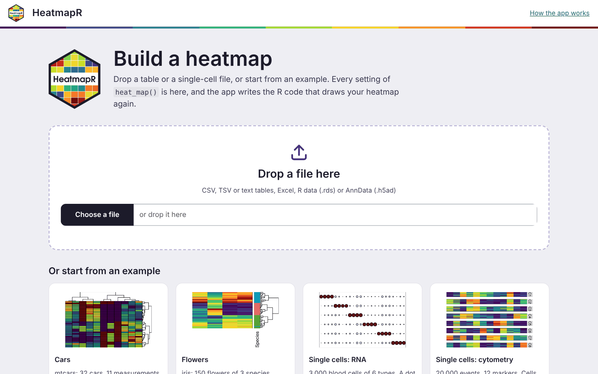
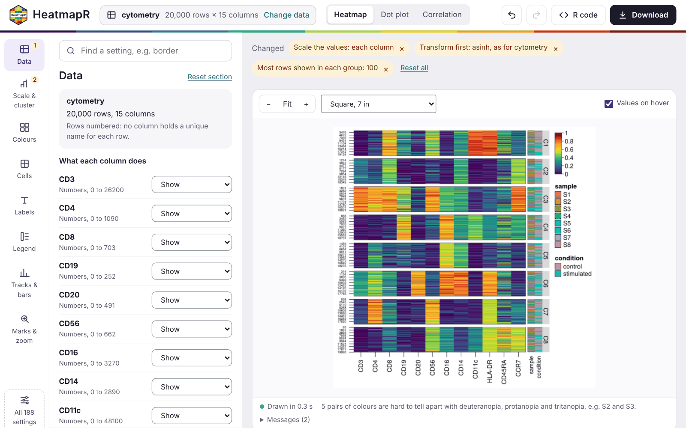
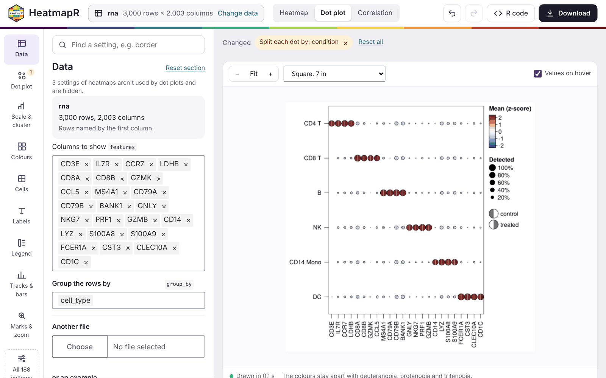
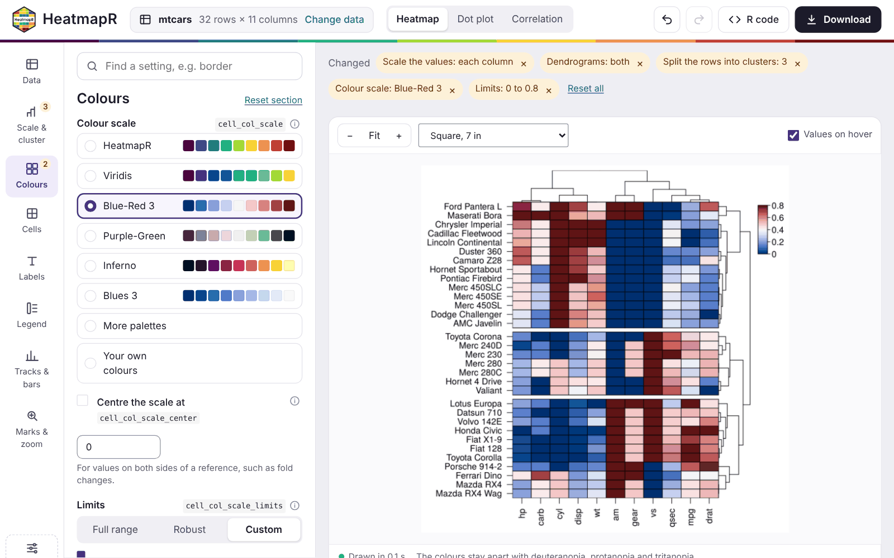
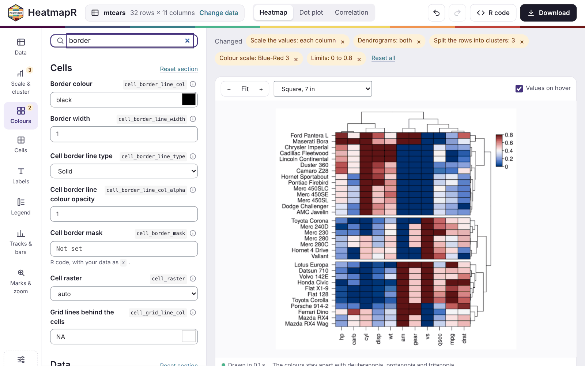
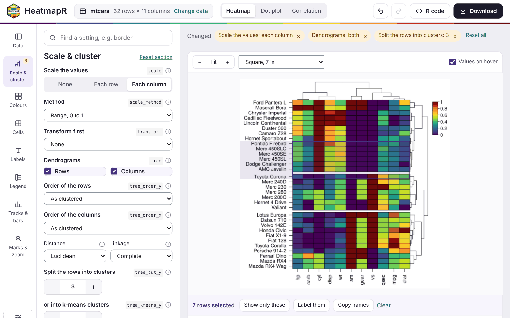
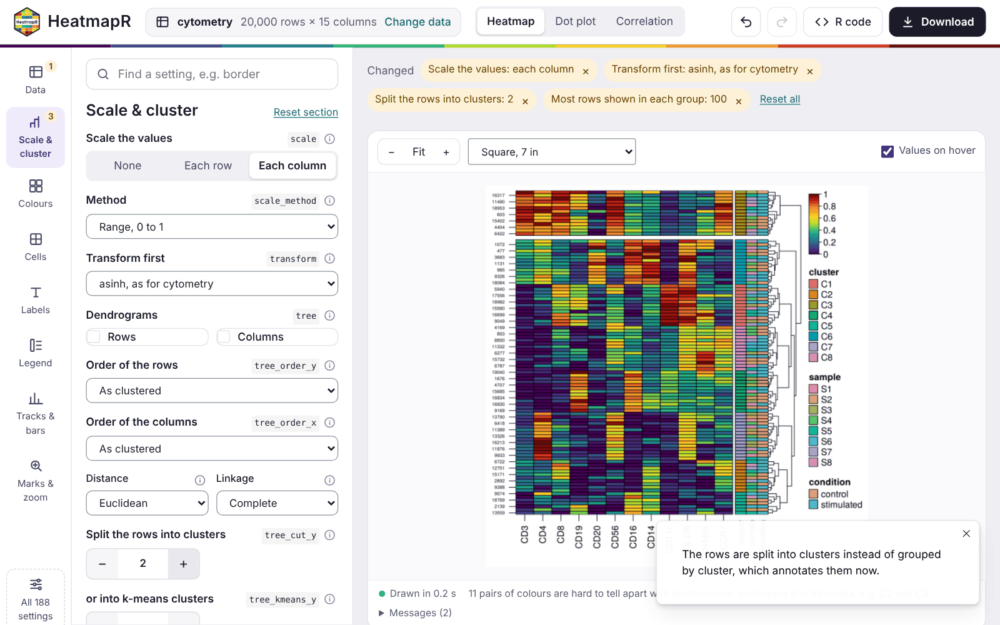
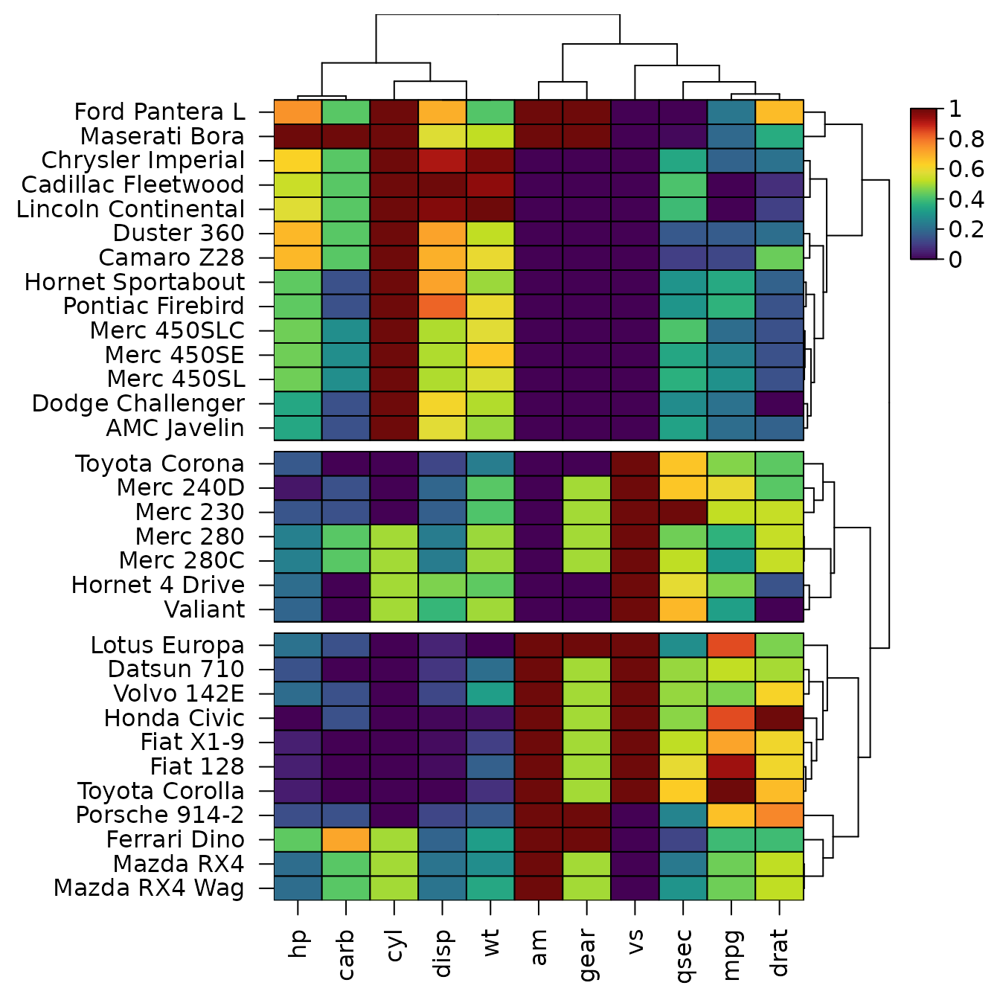
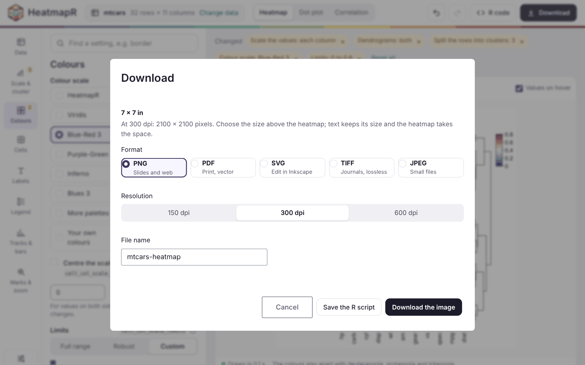
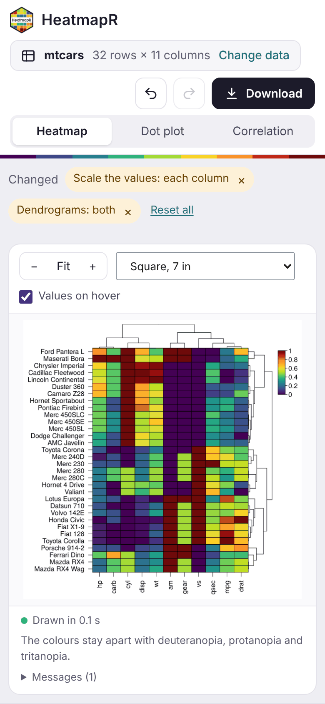

heat_map_app() opens an app in the browser to build a
heatmap without writing any code. You can drop a table or a single-cell
file on it, choose a heatmap, a dot plot or a correlation heatmap, and
set any argument of heat_map(). The heatmap redraws as you
go. Beside it, the app writes the R code that draws the same figure
again, so whatever you make in the app can be reproduced, shared and
edited in a script.
The app is a Shiny app: it needs the shiny and bslib packages, and readxl to read Excel files.
install.packages(c("shiny", "bslib", "readxl"))Starting the app
With no data, the app opens on its start page. You can drop a file on
it or choose one of four examples: mtcars,
iris, and the single-cell RNA and cytometry data of
heat_map_example(). The app can also start straight from
data in R, or from a file, with any settings of
heat_map():
library(HeatmapR)
heat_map_app() # the start page
heat_map_app(mtcars, scale = "column", tree = "both")
heat_map_app("counts.csv") # a file
heat_map_app(sce) # a SingleCellExperiment or Seurat objectIt reads these files:
- tables: CSV, TSV and text files (the separator is worked out), and Excel files;
- R data files (
.rds), which can hold any data thatheat_map()draws, including single-cell objects; - AnnData files (
.h5ad).
heat_map_app() returns the app, which runs when it’s
printed at the console. In a script, pass it to
shiny::runApp().

The workspace

- The top bar shows the data, with Change data, and the kind of plot: Heatmap, Dot plot or Correlation. It also has undo and redo, R code (a panel with the code) and Download.
- The rail on the left holds the sections of the settings: Data, Scale & cluster, Colours, Cells, Labels, Legend, Tracks & bars, and Marks & zoom. A badge shows how many settings of a section you’ve changed. All 188 settings lists every argument.
- The panel shows the settings of the section chosen.
- Above the heatmap, the settings you’ve changed are listed as chips. Each chip has a button that resets it, and Reset all resets everything.
-
Below the heatmap, a status line gives the time
taken to draw it and the result of
heat_map_check_colours(). Any messages fromheat_map()are kept under Messages.
The heatmap is drawn again a moment after each change. When a change only affects the look of the heatmap, the clustering is reused, so styling a large heatmap stays quick.
Data
The Data section says how each column of a table is used. In a table of up to 40 columns, each column gets one of these roles:
- shown in the heatmap;
- grouping the rows (
group_by); - annotating them (
annotation_by); - left out.
The app chooses roles to start with: numeric columns are shown, and text columns of up to 30 values annotate the rows. A first column of unique text, such as gene or sample names, becomes the row names. Wider tables, and single-cell data, are set with pickers instead:
- the features to show;
- the columns of metadata to group and annotate the cells by;
- the assay to use.
Single-cell data start grouped by their cell type or cluster column when they have one. Another file and Example in the same section change the data. Settings that only make sense for the old data, such as marked rows or a number of clusters, are reset, and a notice says so.

Heatmaps, dot plots and correlations
The switch in the top bar changes the kind of plot:
-
Heatmap draws
heat_map()of the data. -
Dot plot draws
heat_map_dot(): one dot for each group and feature, with the mean as its colour and the share of cells detected as its size. It needs groups, chosen in Data. -
Correlation draws
heat_map_cor(), the correlations between the columns shown, for tables.
Dot plots and correlations get their own section of settings, such as
the threshold of detection, splitting the dots by two conditions, or the
method and layout of the correlations. These plots are drawn by
heat_map() from a summary of the groups or from the
correlation matrix. So the settings of heatmaps that would rescale,
subsample or annotate that summary are hidden while they’re shown. The
settings of each kind of plot are kept while you look at another.

Settings
Each setting has a plain label, the name of its argument beside it, and its documentation one click away behind the info button. The settings used most come first in their section, with inputs made for them:
- buttons for choices;
- steppers for numbers of clusters;
- palettes shown as strips of their colours;
- the limits of the colour scale over a histogram of the values, so you can see which values fall outside them.
The rest are under More settings in each section. The search
box at the top finds any setting by its label or its argument,
e.g. border.


Undo and redo step back and forward through your changes, including changes of plot. When a combination of settings can’t be drawn, the reason is shown, along with buttons that reset the settings involved, and the last heatmap that worked stays on screen.
Some settings take values that belong to the data, such as
bar_values_y for the values of a bar beside each row. These
are R code, run with the data as x, so
bar_values_y = x$mpg draws a bar for the mpg
of each car.
Exploring the heatmap
- Hover over the heatmap to see the values of a cell: its value before and after scaling, and its cluster and annotations.
-
Select rows and columns by clicking or dragging
over the cells. Then:
- Show only these keeps them. That means the rows of a table, the groups of a dot plot, or the features selected.
-
Label these marks them on the heatmap (
mark_y,mark_x). - The copy button copies their names.
- Zoom in and out with the buttons above the heatmap, and fit it to the window again with Fit.
-
Size the heatmap with the menu beside them, which
sets the size of the figure:
- a square of 7 inches;
- a journal column (3.5 inches) or page (7.2 by 6 inches);
- a 16:9 slide;
- A4;
- your own size.

Clusters and groups
heat_map() groups the rows either by a column
(group_by) or by the clusters of a dendrogram or k-means
(tree_cut_y, tree_kmeans_y), not both. The app
goes with your latest choice:
- Splitting grouped rows into clusters stops grouping them. The column that grouped them annotates them instead.
- Grouping the rows again drops the clusters.
A note says what changed each time.

The R code
The R code panel holds the code that draws the heatmap again, with only the settings you changed. The line of your last change is highlighted, and Copy and Save .R take the code away. For the heatmap of mtcars above, the app writes:
library(HeatmapR)
x <- mtcars
hm <- heat_map(
x,
scale = "column",
tree = "both",
tree_cut_y = 3
)
heat_map_save("mtcars-heatmap.png", x = hm,
width = 7, height = 7, res = 300)which draws, here without saving it:

The code reads the data as the app did. A file is read with the same
function and options
(e.g. read.csv("counts.csv", row.names = 1, check.names = FALSE)),
and an example with heat_map_example(). Rows kept with
Show only these are kept by name. For the dot plot above:
library(HeatmapR)
x <- heat_map_example("rna")
hm <- heat_map_dot(
x,
features = c("CD3E", "IL7R", "CCR7", "LDHB", "CD8A", "CD8B", "GZMK", "CCL5",
"MS4A1", "CD79A", "CD79B", "BANK1", "GNLY", "NKG7", "PRF1",
"GZMB", "CD14", "LYZ", "S100A8", "S100A9", "FCER1A", "CST3",
"CLEC10A", "CD1C"),
group_by = "cell_type",
split_by = "condition"
)
heat_map_save("rna-dot-plot.png", x = hm,
width = 7, height = 7, res = 300)Downloading
Download saves the heatmap at the size chosen above it, as:
- PNG, for slides and the web;
- PDF, for print, as vectors;
- SVG, to edit in a program such as Inkscape;
- TIFF, for journals, without losing detail;
- JPEG, for small files.
The resolution can be 150, 300 or 600 dpi. Save the R script downloads the code beside the image.

Phones and tablets
On a narrow screen, the sections of the settings scroll across the top, and the settings and the code sit below the heatmap. On a touch screen:
- tap a cell to see its values;
- drag to scroll;
- press and hold, then drag, to select rows and columns.

Sharing the app
heat_map_app() returns an ordinary Shiny app, so it can
be hosted for people who don’t use R, e.g. on shinyapps.io, Posit Connect or
Shiny Server, with a file app.R that holds:
HeatmapR::heat_map_app(allow_code = FALSE, max_upload = 200)Settings that take R code run it in the R session of the app. For an
app hosted for other people, allow_code = FALSE limits
those settings to plain values: numbers, text, TRUE,
FALSE, NA, NULL, and
c() or list() of them. max_upload
sets the size of the largest file that can be uploaded, in
megabytes.
To share a single heatmap rather than the app,
heat_map_html() writes a web page of it that works without
R: hover for values, select rows and columns, search and zoom (see Working with heatmaps).